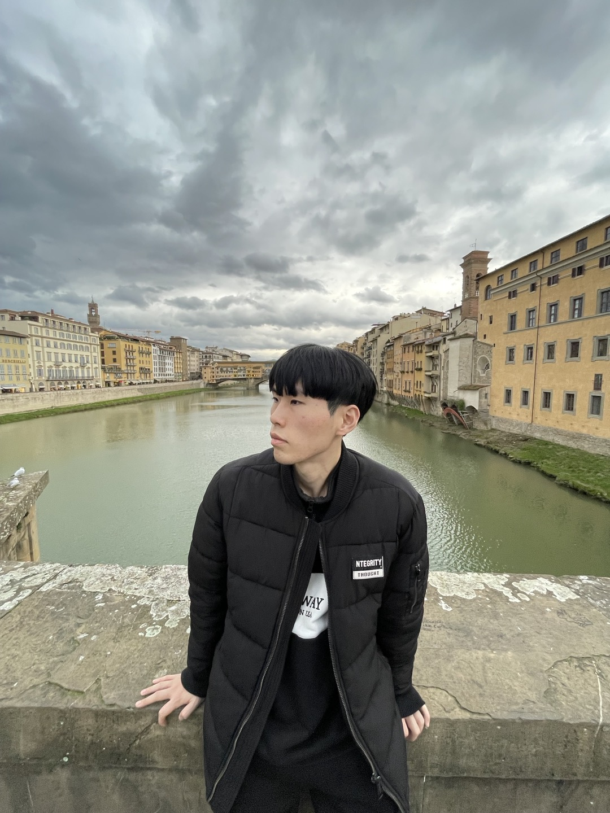
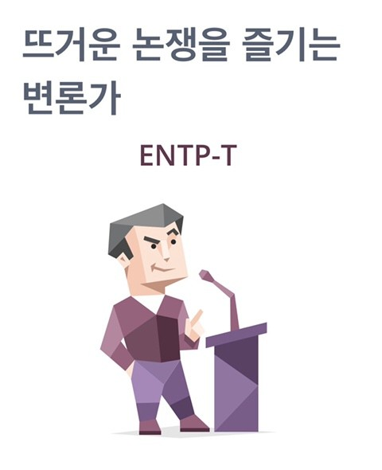
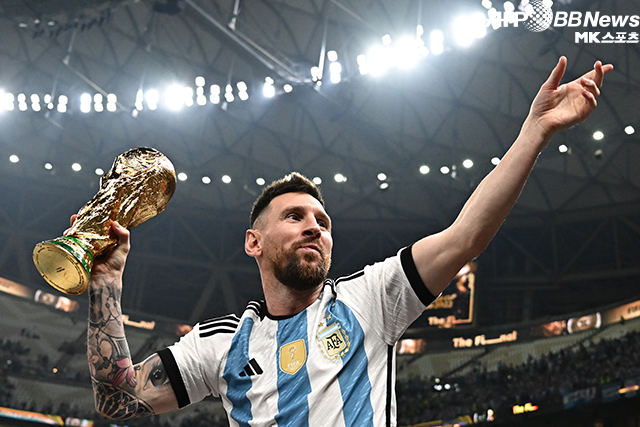
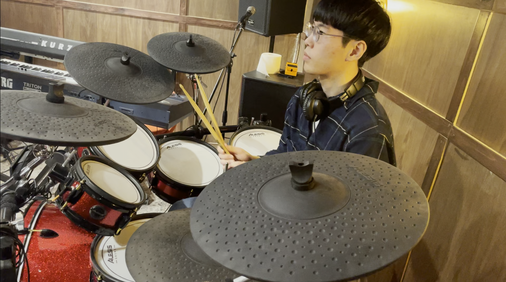

안녕하세요, 저는 이영찬입니다!
기본정보

저는 고려대학교 영어교육과 4학년 재학 중인 18학번 이영찬입니다.
부전공으로는 문과대 LB&C 융합전공을 선택했습니다.
1999년 1월 23일에 서울에서 태어났으며 올해 25살입니다. 6월에 1살 어려질 예정
현재 본가는 수원에 있고, 경기도에서 운영하는 경기푸른미래관에 서식하고 있습니다.
좋아하는 색깔은 파란색입니다.
학력
서울 나무어린이집 (2003 ~ 2006)
서울 원묵초등학교 (2006 ~ 2007)
서울 동원초등학교 (2007 ~ 2011)
수원 칠보중학교 (2012 ~ 2014)
안산 동산고등학교 (2015 ~ 2017)
서울 고려대학교 (2018 ~ )
성격
성격은 어릴 때 내향적이었다가 점점 자라면서 외향적으로 바뀌었습니다.
그래도 아직 새로운 사람을 만날 땐 낯을 조금 가리기도 합니다.
MBTI는 ENTP이며, 새로운 것을 만들고 이에 대해 의견을 나누는 것을 좋아합니다.

또한 좋아하는 것에는 시간을 아끼지 않는 편이며,
재미를 제 1 가치로 추구해 무엇을 하든 재밌게 하는 것이 목표입니다.
취미
스포츠, 음악, 보드게임, 방탈출을 좋아합니다.
스포츠는 축구를 가장 좋아하며, EPL의 황제인 맨체스터 시티의 팬입니다.
좋아하는 선수는 축구의 신인 리오넬 메시입니다.
 Goat..
음악은 악기연주와 노래 듣고 부르는 것 모두 좋아합니다.
악기는 피아노, 기타(어쿠스틱/일렉/베이스), 드럼을 칩니다.
 열심히 드럼치고 있는 모습..
보드게임과 방탈출은 친구들과 재밌게 시간을 보낼 수 있는 활동이라 좋아합니다.
특기
특기는 경청입니다. 타인의 말을 귀담아듣는 것을 즐기며, 공감을 잘합니다.
이를 통해 타인과 저의 대화를 통해 서로간의 의견을 절충하는 의견을 내고,
한 집단에서 저의 의견을 내고 논의를 발전시켜 나가는 것을 좋아하고 즐깁니다.
리더로서 집단을 이끄는 것에 가깝다기 보다는, 집단이나 모임에 성실히 참여하며
서포트 해주고 그 안에서의 재미와 더 나은 발전방안을 찾는 것에 중점을 두는 편입니다.
NEXT에 들어온 이유
더 많은 경험을 하고 더 멋진 사람이 되기 위해 NEXT에 들어오게 되었습니다.
최근에는 서비스 기획에도 관심이 있는데,
NEXT에서 멋진 분들과 함께 새로운 경험을 통해 저의 실력을 넓고 깊게 향상시키고 싶습니다.
올해 목표
올해 목표는 개발/기획을 총체적으로 경험해 보는 것입니다.
또한 마음과 뜻이 맞는 사람들과 함께 해커톤이나 프로젝트 등 많은 경험을 해보고 싶습니다.
기술 STACK
NEXT에 들어오기 전에 독학으로 4개월 정도 코딩을 공부하고,
전에 있던 동아리에서 프로젝트를 한 번 진행했던 경험이 있습니다.
능숙하거나 잘하진 못하지만, 경험해봤던 기술로는
HTML/CSS/JavaScript, React.js, Typescript, Github 정도 입니다.